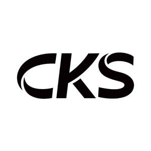

Trade Mark Journal No.2025/020 16 May 2025
UK00004196006 28 April 2025 (1,2,19)

- Class 1
- Graphene; Additives for concrete; Adhesives for the construction industry; Concrete admixtures; Waterproofing chemical compositions; Industrial adhesives; polyurethane adhesives; Adhesives for floor, ceiling and wall tiles; Adhesives for laying ceramic tiles; fireproofing preparations; agricultural chemicals, except fungicides, herbicides, insecticides and parasiticides; adhesives for ceramic tiles; cement-waterproofing chemicals, except paints; damp-proofing chemicals, except paints, for masonry; Industrial chemicals; size for walls; chemicals for the manufacture of paints; Industrial adhesives for use in coating and sealing; tensio-active agents; Chemical admixtures for concrete.
- Class 2
- Pigments; Coatings; Coatings for roofing felt [paints]; distempers; badigeon; Fire-retardant coatings [paints]; protective preparations for metals; enamel paints; anti-rust preparations; anti-fouling paints; architectural paints; water-repellent paints; preparations for use as waterproofing coatings on the surfaces of buildings [paints]; lacquers for use by decorators; paint sealers; polyurethane varnish; binding preparations for paints; Epoxy coating for use on concrete industrial floors; anti-graffiti coatings [paints]; anti-corrosive preparations.
- Class 19
- Mortar for building; bituminous coatings for roofing; bituminous products for building; roof coverings, not of metal; Cladding (Non-metallic -) for buildings; building materials, not of metal; floors, not of metal; Roof gutters, not of metal; coatings [building materials]; rubber bearings for seismic isolation of buildings; Fabrics for use in civil engineering (geotextiles); Bituminous products in the form of membranes for waterproofing ; mortar; grouting materials; gypsum [building material]; terrazzo; Plastic building boards; PVC roofing membrane ; Self-levelling concrete for use in building construction; roofing membranes.
Keshun Waterproof Technology Co.,Ltd.
Representative: Trademarkit LLP